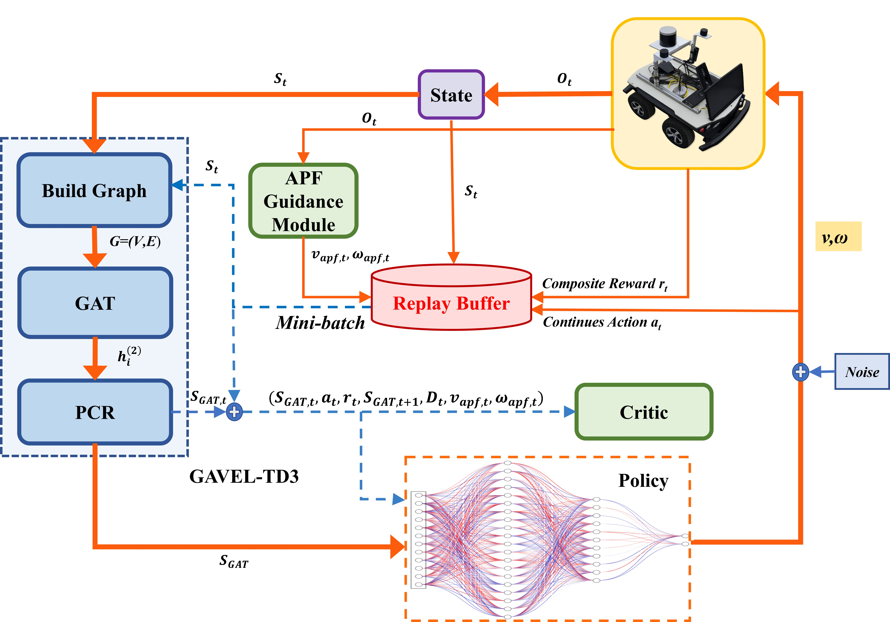
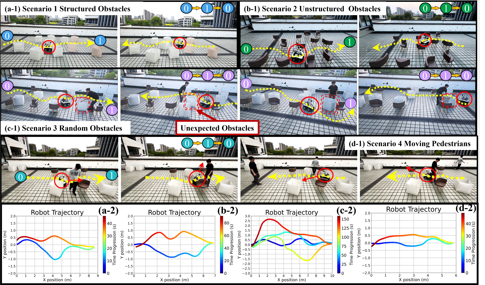
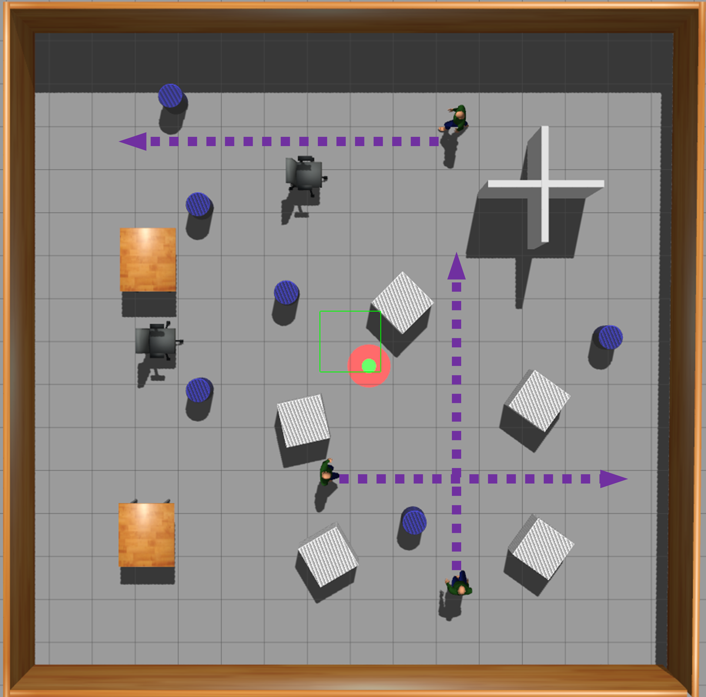
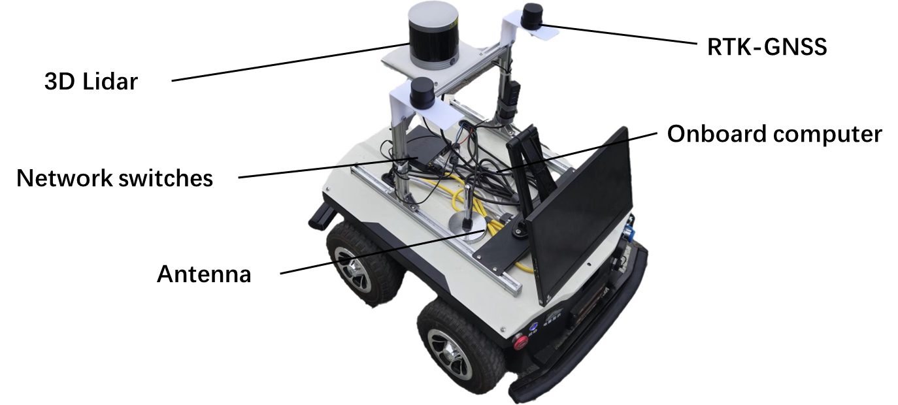

Build Graph + GAT
LiDAR sectors become graph nodes, allowing the network to learn relational obstacle geometry from local measurements.
Engineering Applications of Artificial Intelligence · Project Page
GAVEL-TD3 combines graph-attention state representation with artificial-potential-field-guided value learning for safe, efficient mapless navigation in complex environments.
1Zhejiang Gongshang University · 2Key Laboratory of Electronic Business and Logistics Information Technology of Zhejiang Province · 3Luoteng Technology · 4Zhejiang University

Video
Watch GAVEL-TD3 navigate structured, unstructured, random, and dynamic outdoor scenarios using only local sensing.

Watch supplementary video ↗Abstract
Deep reinforcement learning can enable end-to-end mobile robot navigation without prior maps, but local LiDAR observations provide incomplete and noisy scene information, while early exploration can be slow and unsafe. GAVEL-TD3 addresses these two limitations in a unified mapless navigation framework.
First, the LiDAR scan is represented as a graph and processed with graph attention networks to capture spatial dependencies between obstacles. Second, an artificial potential field supplies reference actions to an auxiliary critic during early training, accelerating convergence without constraining the final learned policy. Both components are integrated into Twin Delayed Deep Deterministic Policy Gradient.
Method
GAVEL-TD3 turns sectorized LiDAR observations into a directed graph, derives an attention-based state representation, and learns continuous velocity commands with APF-guided value learning.
LiDAR sectors become graph nodes, allowing the network to learn relational obstacle geometry from local measurements.
Pooling and concatenation preserve the environment representation together with goal and robot-motion information.
Reference velocities guide an auxiliary critic during training, while the learned actor produces control actions at deployment.
Simulation & Zero-shot Evaluation
On BARN, GAVEL-TD3 reaches a 0.88 success rate—38 percentage points above TD3—while maintaining efficient and stable decision making.


Real-world Deployment
The learned policy is deployed on a mobile robot with onboard 3D LiDAR. No prior map or parameter tuning is used in the outdoor experiments.

GAVEL-TD3 outperforms TD3 across all four scenarios: 5/5 versus 3/5 in structured obstacles, 4/5 versus 2/5 among irregular chairs, 4/5 versus 1/5 under random changes, and 3/5 versus 1/5 with moving pedestrians.
Across successful runs, it also reaches the goal faster while preserving comparable path lengths.
Citation
@article{liu2026gaveltD3,
title={A Deep Reinforcement Learning Framework for Mapless Navigation of Mobile Robots Incorporating Graph Attention Network and Artificial Potential Field},
author={Liu, Ziheng and Zhang, Zhixiong and Fu, Jun and Wang, You},
journal={Engineering Applications of Artificial Intelligence},
year={2026}
}